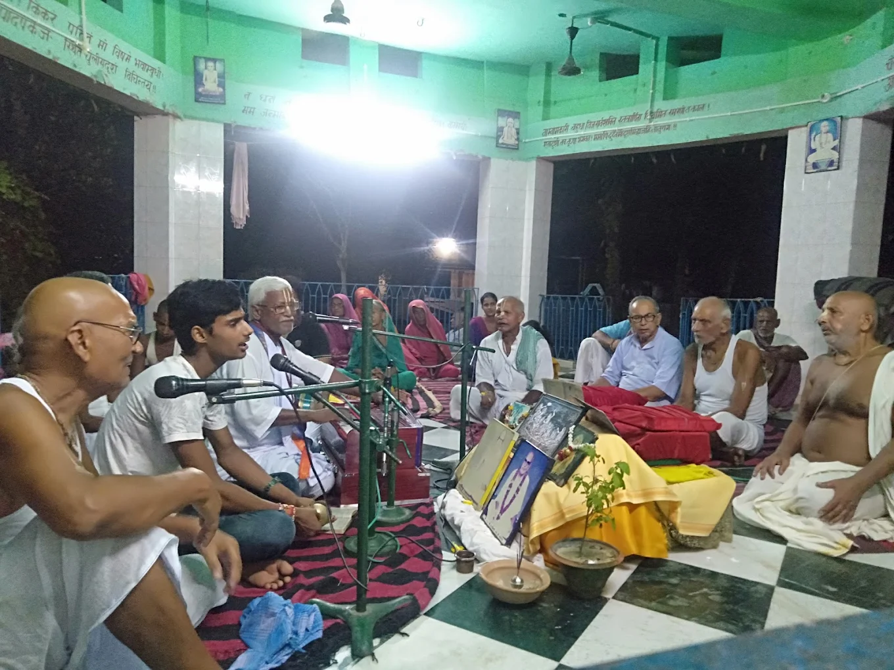
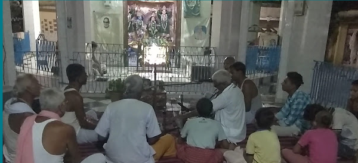
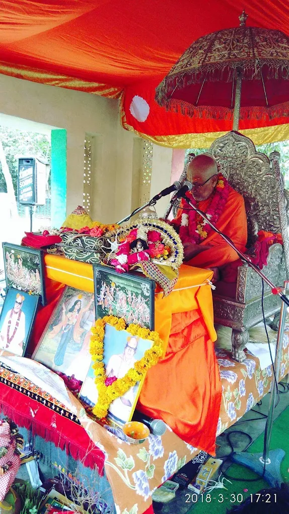

| Seva Performed | Time |
|---|---|
| Temple opens and Pata open | 06:00 AM |
| Morning Mangla Aarti | 08:00 AM - 09:00 AM |
| Bal Bhog | 09:00 AM Onwards |
| Puja and Mid-day Bhog | 11:00 AM - 01:00 PM |
| Thakur Pata closes | 01:00 PM - 04:00 PM |
| Thakur Pata reopens | 04:00 PM Onwards |
| Evening Aarti | 07:00 PM - 08:00 PM |
| Evening Bhog | 09:00 PM - 09:30 PM |
| Pata of Thakur closes | 10:00 PM Onwards |
| Note: During winter hours may differ. | |



Jayanti Mahotsava is a sacred celebration of devotion, spirituality, and divine love, observed towards the end of January. This auspicious festival brings together devotees from near and far, along with revered saints and spiritual personalities from the holy land of Vrindavan, creating an atmosphere filled with bhakti, peace, and joy.
One of the most beautiful highlights of the Mahotsava is the continuous 24-hour Mahamantra Sankirtan, which continues for fifteen days. The holy names of the Lord resonate throughout the celebration, inspiring devotees to immerse themselves in prayer, chanting, and remembrance of Shri Krishna.
Every year, devotees have the blessed opportunity to listen to the divine wisdom of Shrimad Bhagwat Katha, delivered by Shri Gaurang Das Ji Maharaj. Through his spiritual discourses, devotees gain a deeper understanding of Krishna's divine pastimes, the teachings of the scriptures, and the path of devotion.
Seva and compassion form an essential part of this grand celebration. Hundreds of devotees are served Mahaprasad daily, reflecting the spirit of selfless service, equality, and togetherness. The festival becomes a beautiful gathering where everyone shares in the blessings of the Lord and experiences the warmth of the Vaishnava community.
The Mahotsava reaches its grand conclusion with a magnificent Bhandara and the traditional Dola Yatra of Thakur Ji. During this sacred procession, Thakur Ji is carried throughout the entire village, allowing devotees to receive His darshan and participate in the celebration. The village comes alive with kirtan, joy, and devotion, bringing the festival to a memorable and spiritually uplifting close.
Jayati Mahotsava is not merely a festival; it is an opportunity to deepen one's devotion, serve fellow devotees, and experience the timeless spiritual atmosphere of Vrindavan.